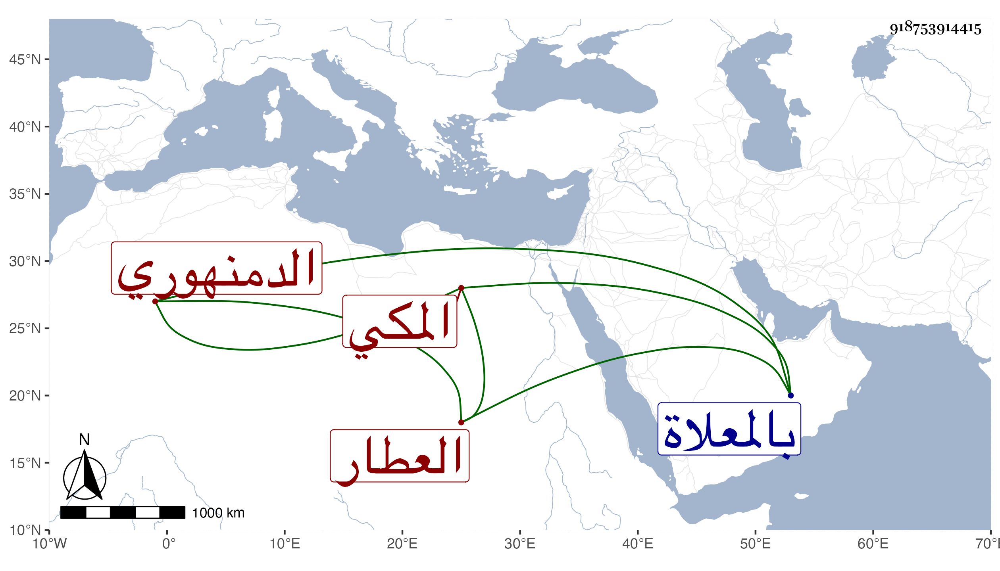

0902Sakhawi.DawLamic.ITO20230111-ara1.EIS1600.918753914415
Biography ID: 918753914415
451
أحمد بن محمد بن عماد الدمنهوري ثم المكي العطار بها والد الجمال محمد الآتي . قدم إليها بعد الثمانين بقليل وعانى التسبب في العطر ببعض الحوانيت مع نسخ كتب العلم والرغبة في تحصيلها كسيرة ابن هشام والرياض النضرة للمحب الطبري وغيرهما وتمول وأنشأ ملكا بناحية الحزورة ثم ذهب منه ذلك وضعف حاله كثيرا حتى مات في شعبان سنة ست عشرة ودفن بالمعلاة وقد بلغ الستين أو جارها وكان ينطوي على خير ودين . قاله الفاسي في مكة .
